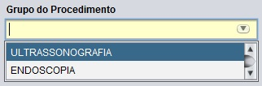
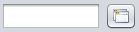
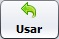
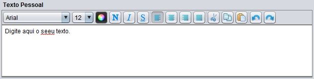
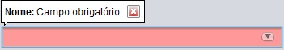

Nos formulários do LaudoeCia contém alguns campos com opções diferenciadas. Conheça alguns deles:
Campos de preenchimento obrigatório
Os campos destacados com a cor amarelada são de preenchimento obrigatório nos formulários. Caso não preencha este campo, não será possível salvar sua ação no sistema.
Campo auto completar

Este campo é muito utilizado nos formulários para pesquisar registros relacionados com um formulário. Ao começar a digitar neste campo, aparece um pop-up
listando as opções que contenham o texto digitado. Por exemplo, ao começar a digitar a palavra "ult", o campo trás a palavra "ultrassonografia" como opção selecionada. Para auto completar a palavra, basta teclar ENTER ou clicar em cima da opção desejada. É possível navegar entre as opções listadas, através das setas para cima e para baixo do teclado.
Também é possível digitar pelo código do registro. Neste caso o campo trás o registro referente ao código digitado como opção no pop-up.
Há ainda a opção de clicar no botão []. Esta opção irá listar todos os registros possíveis para utilização.
Campo buscar

Assim como o campo auto completar, sua função é de buscar registros relacionados. A diferença está na forma de buscar um registro.
Ao clicar no botão lupa, o sistema carrega o cadastro do registro relacionado para que selecione um registro já existente (ou cadastre um novo registro) e utilize-o. Para retorna-lo, utilize o botão .
Campo editor de textos

Possui as funcionalidades básicas de um editor de textos comum, tais como escolher fonte, tamanho, cor, estilos e alinhamento do texto. Possui ainda as opções de recortar, copiar e colar, assim como desfazer e refazer.
Neste editor também há a opção de correção ortográfica. O editor grifa as palavras incorretas sublinhando-as de vermelho. Para corrigir a palavra sublinhada, clique com o botão direito do mouse sobre ela e escolha a opção desejada.
Avisos de preenchimento incorreto
Ao não preencher corretamente um formulário, e tentar salvar o registro, o sistema valida os campos, detectando onde há erros de preenchimento. É mostrado um balão informando como deve ser preenchido o campo. Note que o campo fica destacado na cor avermelhada.